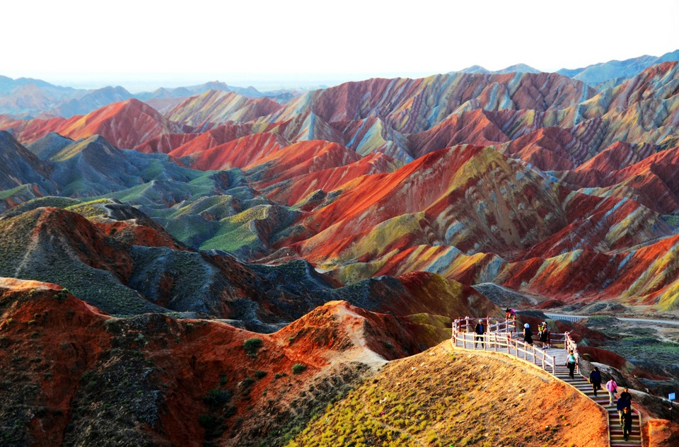
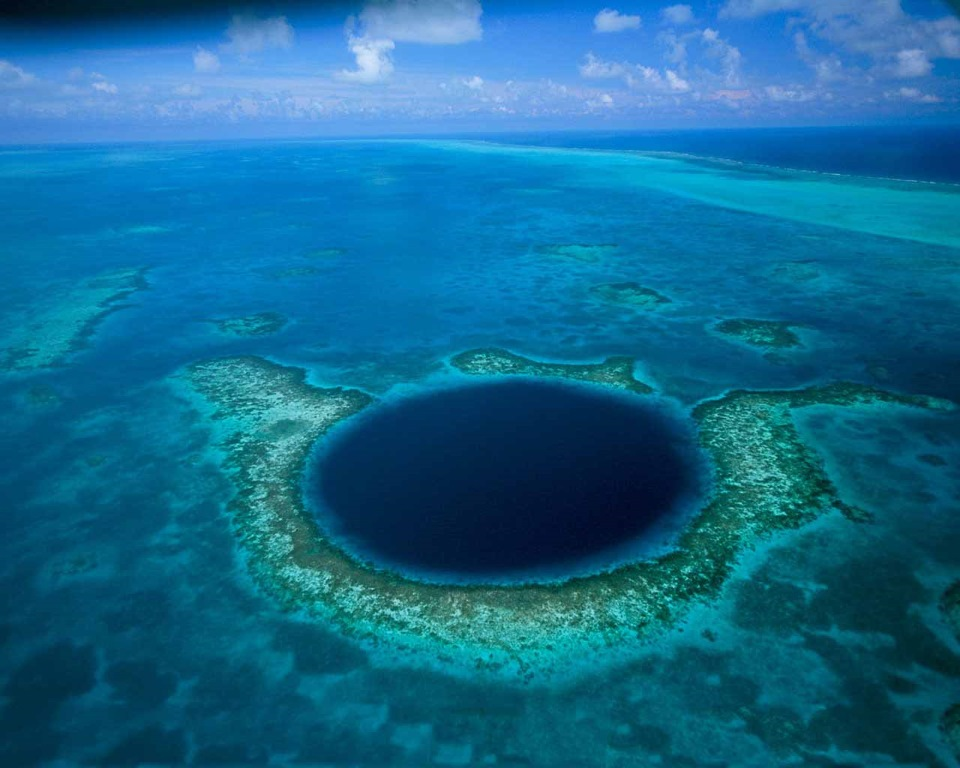
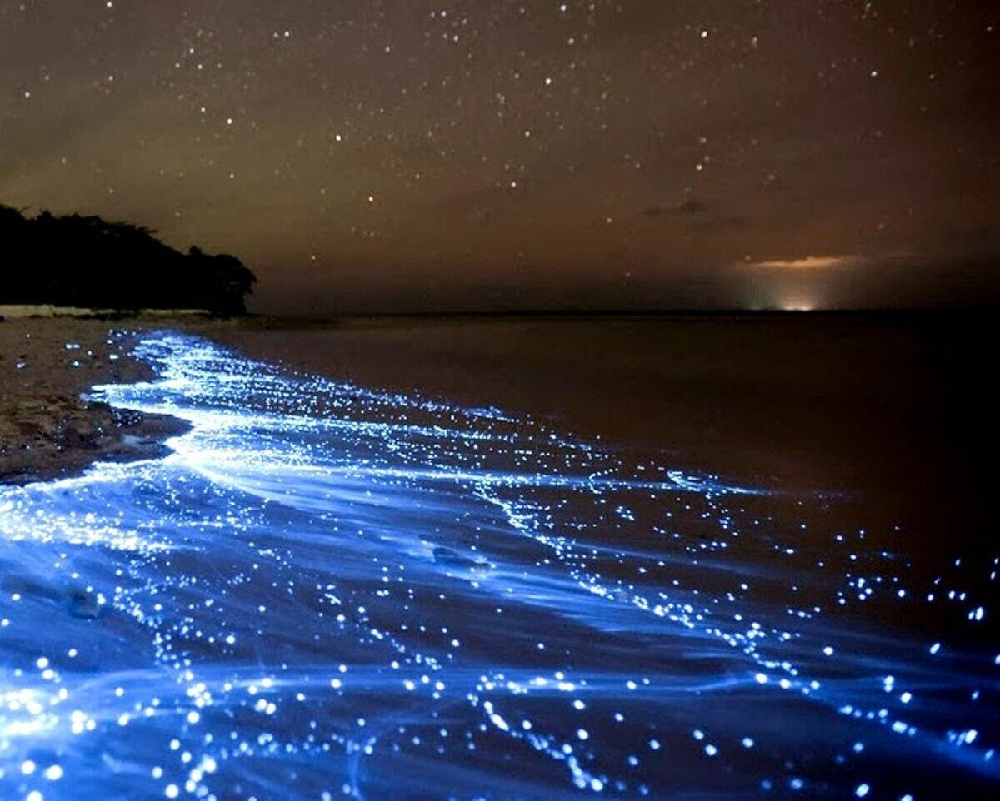
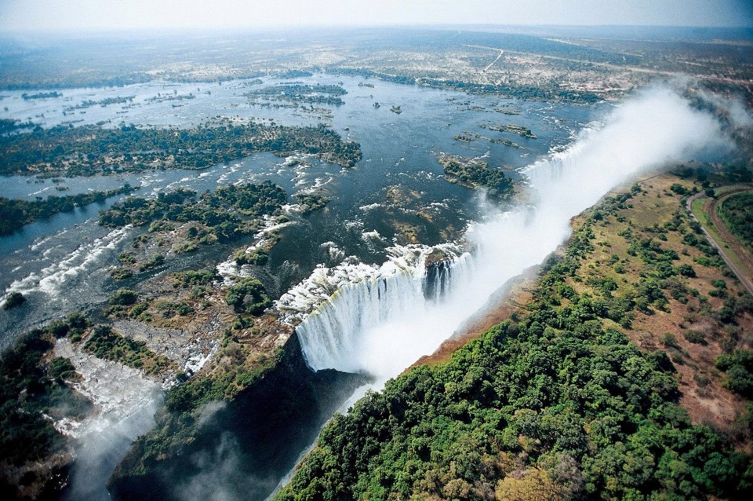

Места в которых каждый хотел бы оказаться
Просто нереально красивые места нашей планеты, где обязательно нужно побывать.
Думаю многие даже не знали что у нас так много удивительных мест




Цветные скалы Чжанъе Данксиа, Китай
Большая Голубая Дыра, Белиз
Море Звезд на острове Ваадху, Мальдивы
Водопад Виктория на стыке Зимбабве и Замбии